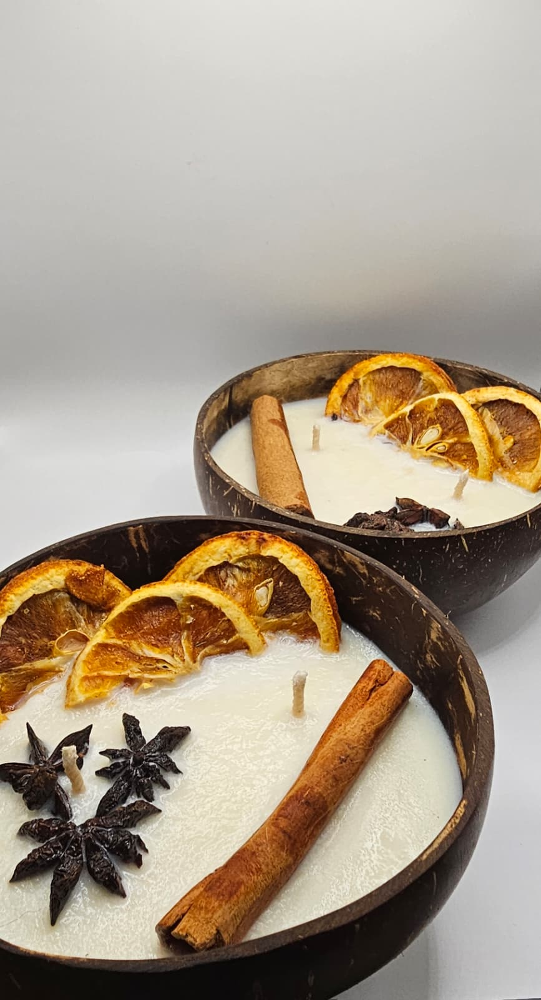

Nuestras velas



Velas artesanales hechas con intención

Hola! Somos Victoria y Silvia, dos amigas con ganas de salir de la rutina y crear algo propio.
Entre charlas, aromas y momentos compartidos, descubrimos que una vela puede transformar completamente un
espacio y también un momento.
Somos amantes de los pequeños rituales cotidianos: un rato de descanso después de un día largo, una serie
que engancha, un buen libro o simplemente desconectar. En todos esos momentos, siempre había una vela
encendida acompañándonos.
Así empezó todo. Con la idea de llevar esa sensación a otros espacios, a otras personas. Creamos velas
pensadas para acompañar, relajar y generar ambientes donde sea más fácil frenar un poco y disfrutar.
Flamitas de Hécate no es solo un producto, es una invitación a regalarse un momento.
📷 Instagram: @flamitasdehecate
📩 Email: flamitasdehecate@gmail.com